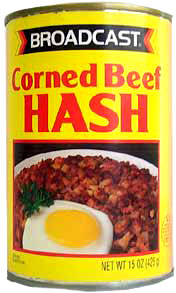
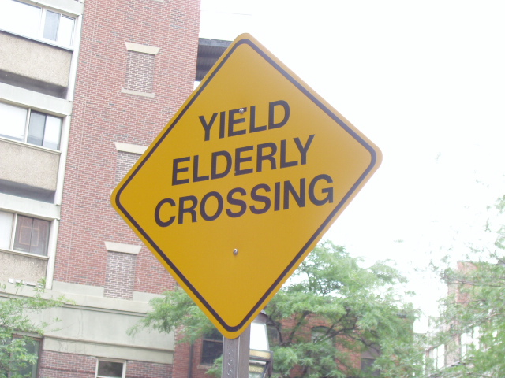

Logistics
- Sections have been assigned
- We have already swapped a number of people between sections, and are currently stable and well-balanced across section times
- To request a section swap, e-mail john@7fff.com and keithlmorrison@gmail.com with "SWAP" in the subject line . . . ASAP
Assignment 1
- What is a one-liner? Will discuss in 2nd hour
Agenda
- Bit more on operators
- Ranges
- Arrays
- Hashes
- Control structures
- Iteration
Operators: compound assignment
- Mentioned +, -, <<, etc.
- Frequently get operators +=, -=, <<= "for free"
- Check API docs
Operators: % for Strings
- Used to format Strings
- Syntax: 'someformat' % value
- Or, for muliple: 'someformat' % [ val1, val2 ]
- In formats, % indicates start of formatting substring
- Can mix with String iterpolation
- For documentation on formatting: ri Kernel#sprintf
Operators: <=> and ===
- Will mention in passing; discussion later
- Read up on these
Standard type: Range
- Represents a sequence
- Syntax: start..end
(a "closed" or "inclusive" range: includes start and end)
- Syntax: start...end
(an "open" or "exclusive" range: note the three dots: excludes end value)
- Examples: 1..10, 'a'...'z'
- Only stores start and end values, so 1..100000 only a few bytes
Ranges and iteration
- Endpoints must respond to <=> operator (more next lecture)
- To iterate through a range, endpoint classes must implement #succ (such a range called "discrete"; w/o #succ, "continuous")
- Terminates when value greater than succeeding value
- discrete ranges can index Strings and Arrays
- to_a method
- also very useful: #include?, #first, #last, #exclude_end?
- flip-flop operator: See Pickaxe
Range: examples
- A few things we do with Ranges
Array
- Represents an ordered collection of elements
- Syntax: [1, 2, 3], [ '1', 2, RUBY_VERSION.reverse ]
- First element has index 0
- Elements needn't be of same class
- An Array literal is a comma-separated list of elements, surrounded by square brackets
- For Array of Strings, %w|foo bar baz| (see Pickaxe: PDF, p. 330, print, p. 318)
- Declare empty Array with Array.new or [] (known as the literal array constructor); Array.new allows you to set length and values
Array: examples
Array: Bit more on Array.new
- Array.new(size, default)
- Watch out! default is re-used
- We will talk about how to fix this . . .
Array: Indexing
- Can use negative indices; a[-1] gets last element, a[-2] next to last, etc.
- If your Array has 3 elements, and you ask for, say, a[5] you just get nil
- If you assign a value to an element beyond the end, it gets extended
Array: Putting subarray on left-hand side of equals
- subarray on left replaced with Array elements on right
Array: Favorite methods
- As with Fixnum and String, you are advised to read the API docs in the Pickaxe and/or ri
- clear, compact!, uniq!, join, pop, push, +, -, empty?, include?, first, last, reverse, unshift, length, size (same as length), sort (also NOTE: sort_by), cycle (new for 1.9)
Array: operators
- When reading docs, notice that operators are defined
- - (removes common elements), + (aka concat), << (aka push), * (repetition and, w/ String, aka join)
- And booleans: | and & (for big collections, use Set)
- And comparisons (ordering analogous to Strings: see ri "Array#<=>")
Array: join
- Compare with String#split
- Converts elements to String first!
Array: Destructive operations
- When a method ends with ! (bang), the result usually changes the object
- The ! is a convention, not required
- Note: If YOU introduce a ! method, it is conventional to also have a non-bang version
Parallel assignment
- Ruby allows you to assign multiple values in the same expression
- Best to learn by example
- See Pickaxe for discussion of different numbers of values on left and right
- NOTE: Also related to the "splat" operator (discussed later)
Hash

Hash
- A hash is an unordered collection of elements
- Syntax: { 'one' => 1, 'two' => 2 }
- Elements stored in key/value pairs
- Create with Hash.new or Hash literal: {}
- Can also do Hash[1, 'a', 2, 'b'] to get 1=>'a', 2=>'b'
- Retrieve via a key using brackets: h['one']
- In other languages: dictionaries, associative arrays, maps
- Special role in Rails: keys acting as names of parameters
Hash: Setting one up
- Traditional syntax: h = { key1 => value1, key2 => value2 }
- Would you use an Array or Hash to represent the separate details of a course?
Hash: New syntax when keys are symbols
- { key1: value1, key2: value2 }
- Keys must be legitimate tokens for symbols
Hash: Favorite methods
- empty?, include? (aka has_key?), length (aka size)
- Retrieve elements with brackets (reminder: create Hash with braces, retrieve element with brackets)
- Set element by putting retrieval on left-hand side
- Can define a default value with .default
- Default value is re-used: Watch out!
Also can give the default value in the constructor
- A Hash of section leader names, each with an Array of student names
Repeat: Default value is re-used
- What will this print out?
- We will come back to this
Control Structures
Control Strctures: A Note
- For small tight loops, Rubyists don't use while, until, for, loop!
- They use iterators instead - coming up!
Control Structures: if, unless
- Allow us to run a block based on a condition
if, unless: as modifiers
- if and unless can be used as statement modifiers
- I find the unless modifier hard to read
Reminder about truth
- "Any value that is not nil or the constant false is true." (Pickaxe)
- Remember when we looked at String.index ? Now here's =~ again
- =~ returns a number if there is a match, which is considered to be true in a condition
Control Structures: if, elsif, else
- if / elsif / else much like other languages
Sometimes need "then" keyword
- If on one line, add "then"
Control Structures: case
- Somewhat like "switch" in other languages
Control Structures: case and assignment
- Personally, I don't like this this idiom (below)
- Reason: If I add lines, what's inside "when" depends on order to return value properly
Control Structures: case equality
- Case/when uses "case equality" (next lecture)
Control Structures: While and Until
- classic while: test expression at the top; keep looking while expression evaluates to true
- until: same syntax, but means: while not
Control structures: while and until modifiers
- Gotcha: When you do begin ... end until, inside will always run at least once!
- Below: Example 1 prints nothing, but Example 2 does
- Need to copy and paste this code into irb
Control Structures: For and Loop
- We will discuss the "for" control structure when we get into Rails. Not super-Ruby-y.
- Loop means: while true do ... end (Pickaxe).
Iteration in Ruby
- Ruby provides "external" iterators (like Java)
- But most natural in Ruby are "internal" iterators
- Let's take a peek at external iteration
Oh, by the way
- Will be smuggling in later topics
- Defining methods
- Passing parameters
- I don't think it will be surprising
External iterators (for the Java/C# developers)
- An external iterator is a helper object
- In Ruby, an external iterator is an instance of the Enumerator class
- Unless you need to pass an interator around, don't iterate this way
- We'll come back the use of external iterators
Array#each
- Our first iterator . . .
- The "each" method iterates through the array, and yields each element to the code block
- We don't see yield: It's in the code for the #each method
Eh?
- Did you say "yield" to "block"??

Digression on yield to block: 1 of 5
- A programmer has existing code that repeats a long boring computation:
Digression on yield to block: 2 of 5
- Boss says: Could you print out the time for each iteration? I need to know how it's going
- Developer: OK
Digression on yield to block: 3 of 5
- Boss says: Could you print the time, too?
- Developer .;oO: "I don't like modifying my compute method... I'll pass in a block and yield to it."
Digression on yield to block: 4 of 5
- Boss says: Could you e-mail me for each compute?
- Developer: NO PROBLEM!!
Digression on yield to block: 5 of 5
- Yield provides for means to call a passed-in block
- A "callback"
- "Don't call us, we'll call you"
- miniature Inversion of control (IoC)
- Design pattern: Strategy
Blocks
- Use braces for single-line blocks
- Use do/end for multi-line blocks
Array#each_with_index
- The each_with_index calls yield with the element, and the index value
Array#inject
- Allows for an accumulator, i.e., a variable (called the memo) that is preserved across iterations
- Slower than each
- But Knuth sayeth: "premature optimization is the root of all evil"
- Incredibly useful for one-liners
Array#collect
- Synonym is map
- Block value used to create new Array element
- Also very useful for one-liers
Array: Other Useful iterators (taking blocks) for Assignment 1
- find
- find_all
- delete
- delete_at
- select
- reject
- grep
- partition
TMTOWTDI (1) (As the Perlists say)
- "There's more than one way to do it" -- Larry Wall
- Take an Array, and return a new Array of all elements greater than 3
TMTOWTDI (2)
- Given an Array, return a new Array where every element is doubled
TMTOWTDI (3)
- Given an Array, return a new Array where every element is doubled; but only for the even ones. Use inject.
Hash#each, Hash#each_pair, Hash#each_key
- Hash's way of iteration
- Most obvious is each_pair
Hash#delete, Hash#delete_if
- No ! because not destructive of the Hash, just its elements
Converting Hash to Array and back
- Hash to Array, Array of keys, Array of values, Array to Hash
- NOTE! Hash[ 1, 'a', 2, 'b' ] has four parameters. Notice below that Hash[*a] has one parameter, the Array a, but prefixed with a *. When prefixed with a *, the Array is turned into a series of individual parameters. See Pickaxe PDF, pp. 143ff. See what happens if you remove the * and re-run. (To make matters worse, you can also use * when you declare a method: See Pickaxe PDF, pp. 353ff.) Hint: This business of writing Hash[*some_array] can be useful.